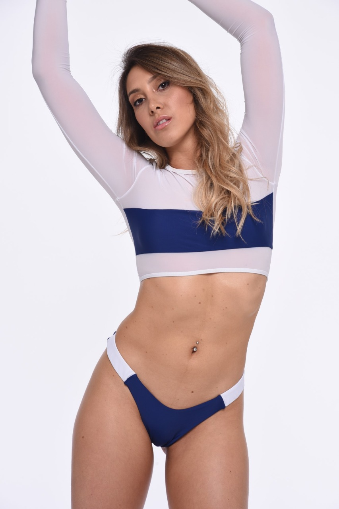
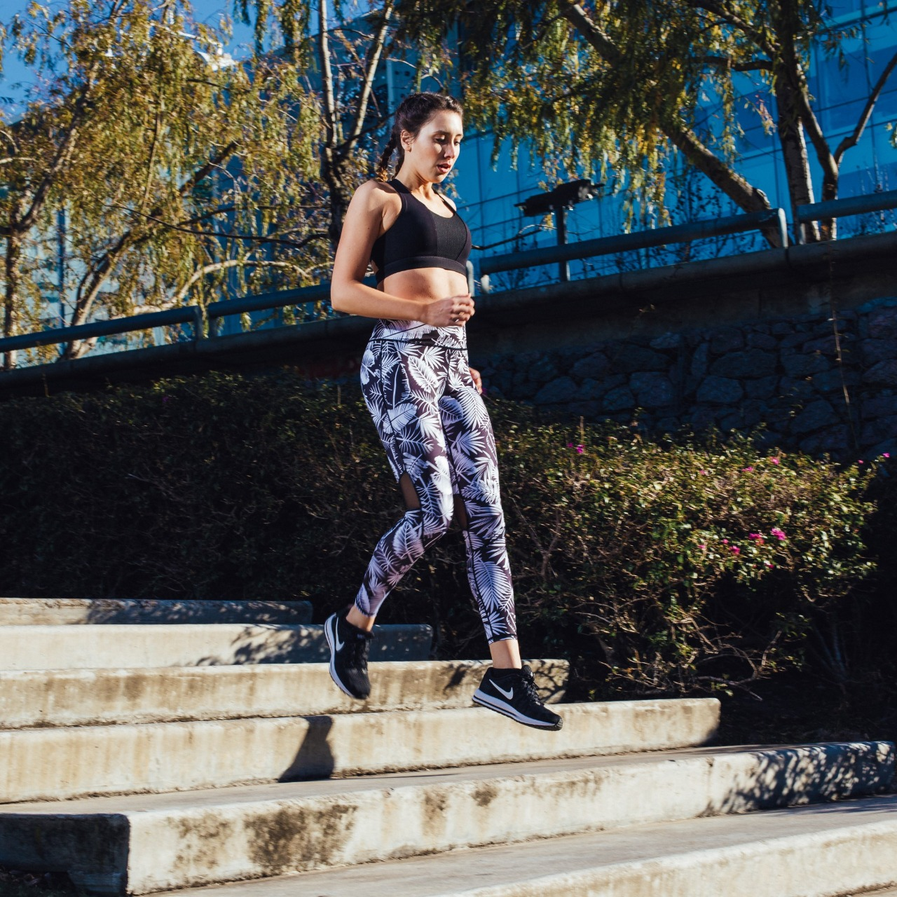

dieta que se vuelve habito
Para lograr un adecuado estilo de vida, es necesario organizar el plan de alimentación y realizar ejercicio físico. El resultado es una mejor calidad de vida en todos los aspectos.

Vive como quieres
Técnicas y trucos de Coaching Nutricional para reforzar la motivación y ayudarte a conseguir tu objetivo de salud, una nueva manera de comprender la alimentación, disfrutando de la comida de una manera sana y perdurable en el tiempo.

Piensa saludable
Cuando la dieta es incorrecta, la medicina no sirve. Cuando la dieta es correcta, la medicina no es necesaria.